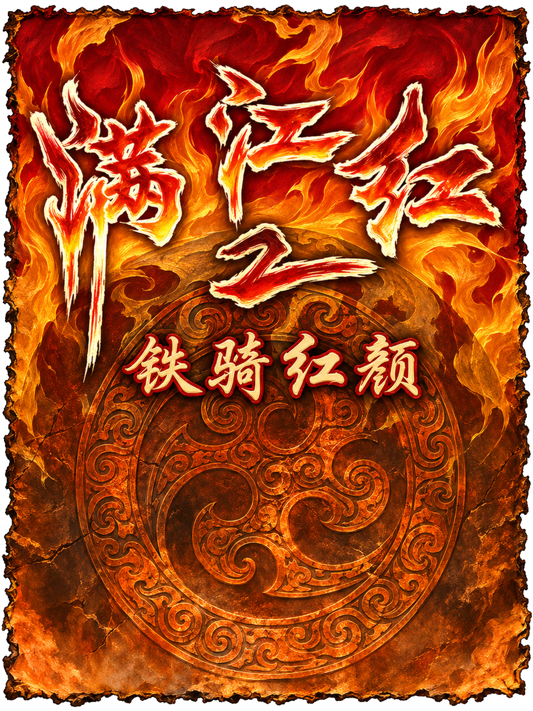

江湖
满江红
铁骑红颜
一枪山河 · 一念故人
山河待启
音
关
菜单
略过剧情
御剑 ↑
临安 · 听雨别院
一 · 风起药庐
行路图
⌁
迹
主线
风起药庐
与耿京交谈
引路 ↗
池荷初静，故人待归。
点地面行走 · 点人物交谈
江湖话叙
略过此段
江湖
一字一句，皆是江湖
轻点继续
◆
攻击
普攻 · 回气 3
技能
选择招式
道具
选择药品
防御
减伤 75% · 回气 9
商店
使用游戏银两补给
横扫千军
凌飞云
一阶
120 / 120
侠
同伴
囊
行囊
录
江湖记
迹
引路

花叶永不相见 · 缘注定生死
满江红二
铁骑红颜
原作六章 · 触屏重制
开始游戏
继续游戏
暂无存档
游戏设置
游戏帮助
关于游戏
点地行走 · 随行即存
正在铺开山河…
山河旧梦
江湖重逢
江湖随身笺
×